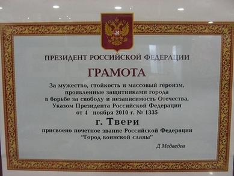
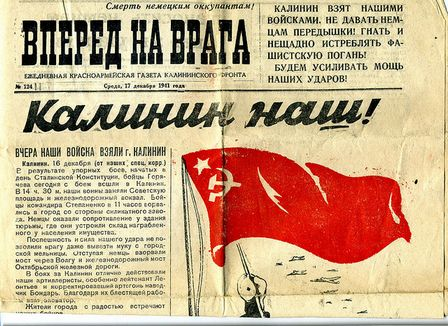

декабрь 2010 года
ТВЕРСКАЯ ЗЕМЛЯ – ЗЕМЛЯ ВОИНСКОЙ СЛАВЫ
Указом Президента РФ восстановлена историческая справедливость. Нашему городу заслуженно присвоено почетное звание «Город воинской славы». Завершена многолетняя и напряженная работа, в ходе которой удалось собрать неопровержимые доказательства имевших место ожесточенных сражений, фактов мужества, стойкости и массового героизма. Ратные заслуги ещё одного города нашей области получили федеральное признание.
Мне, как одному из участников борьбы за признание заслуг нашего города на федеральном уровне, хочется поздравить всех, кто участвовал в этой социально важной работе. Дело сделано, но успокаиваться на достигнутом - нельзя. Необходимо идти вперёд, обратив особое внимание на военно-историческое просвещение жителей города и области. Сейчас, на мой взгляд, необходимо направить усилия власти и общественных организаций на популяризацию уникального героического прошлого нашей области, на увековечение ярких, социально значимых событий Великой Отечественной войны, имевших место в районе городов Западная Двина, Белый, Андреаполь, Торжок.
Популяризация героического прошлого предполагает информационно-просветительскую деятельность, направленную на увековечение ярких социально значимых событий, имевших место в границах нашей области. Нужны достоверные источники информации, которых, к сожалению, за прошедшие после войны 65 лет издано мало. В области нет фундаментального военно-исторического труда, формирующего общее, полномасштабное, объективное представление о ходе и результатах противоборства советских и немецких войск на калининском операционном направлении. Такая задача не ставилась и не решалась. Вследствие этого, за последние годы, под влиянием западных и прозападных публикаций, сформировано искажённое представление о содержании и результатах военных действий в границах Калининской (Тверской) области, акцентирующее внимание на негативных аспектах сражений за ржевско-вяземский плацдарм. Совокупность эффективных оборонительных и контрнаступательных операций, проведённых войсками 22-й, 27-й, 29-й, 30-й и 31-й армий на западных границах области с июля по октябрь 1941 до сих пор остаётся не достаточно исследованной. Не достаточно исследованными остаются наступательные операции Калининского, 1-го и 2-го Прибалтийских фронтов 1944 года, успешно завершенные освобождением области от фашистских захватчиков. Именно эта совокупность незаслуженно забытых оборонительных и наступательных операций создаёт объективное представление о тверской земле, как земле воинской славы.
Отсутствие фундаментального научно-исторического труда, обладающего высокой достоверностью, является одной из причин искажённого представления о том, что тверская земля прославилась в Великой Отечественной войне не эффективными операциями, а огромными потерями войск. В действительности, потери советских войск в боевых действиях на тверской (калининской) земле значительно меньше потерь, имевших место в границах Смоленской, Брянской, Новгородской областей.
Долг перед погибшими защитниками и освободителями тверской земли от фашистских захватчиков обязывает нас создать усилиями исследователей разных поколений достоверный военно-исторический труд, содержащий неоспоримые доказательства фактов мужества, стойкости, героизма, уникальности боевых действий на калининском операционном направлении, способствующий восстановлению исторической справедливости, необходимый для военно-патриотического воспитания молодёжи.
Такой труд, может быть научно-методическим военно-историческим фундаментом, необходимым для популяризации истории Тверской области с помощью современных информационных технологий в СМИ, для патриотического воспитания жителей области, а также для создания информационно ёмких туристических маршрутов по местам боев.
Михаил Хетчиков, доктор военных наук, профессор
|

Из оперативных сводок Калининского фронта №114 и №115.
16 декабря 1941 года.
Войска фронта, завершая уничтожение противника в районе Калинин и, овладев г. Калинин, продолжали развивать энергичное наступление в южном и юго-западном направлениях.
Противник, прикрываясь сильными отрядами, опираясь на инженерные заграждения, отходит в юго-западном направлении.
22 армия, прочно обороняя занимаемые рубежи, ведет активную разведку. Противник на правом фланге 249 сд от ОСТАШКОВО отходит на юго-запад вдоль железной дороги, слабо сопротивляясь продвижению разведподраелениями. На фронте 179 сд оказывал упорное огневое сопротивление. На остальных участках фронта активности не проявлял.
249 сд заняла к исходу дня НОВИНКА, КОСАРОВО, МАРКОВКА, МАКАРОВО, БОЛЬШОЕ и МАЛОЕ ДАНИЛОВО, СИГОВО.
Потери: убито – 11, ранено – 12. Трофеи: уничтожено до 150 фашистов.
179 сд – усиленным батальоном ведет бой за НИКОНОВО. Противник оказывает упорное сопротивление.
186 сд и 220 сд – положение без изменений.
29 армия, обороняя занимаемые рубежи, продолжает операцию по завершению окружения Калининской группировки противника, на правом фланге и в центре активно обороняет занимаемый рубеж и ведет боевую разведку. Противник под прикрытием мелких групп, артогня, инженерного заграждения отходит в направлении СТАРИЦА.
183 и 174 сд – положение без изменений. На фронте огневой бой.
246 сд, продолжая наступление двумя полками, ведет бой за ДЕШЕВКИНО, ДАНИЛОВО, КРАСНОВО.
Потери за 15.12: ранено – 348, количество убитых уточняется.
252 сд – продолжая наступление к 12:00 овладела ОПАРИНО, РЯБЕЕВО, ведет напряженный бой за овладение шоссе КАЛИНИН – СТАРИЦА. Противник удерживает МИГАЛОВО.
243 сд – овладев г. КАЛИНИН, очищает от остатков противника южную и юго-западную окраину КАЛИНИН (дописано на полях: заняли одновременно 243 сд и 256 сд, последняя с юга заняла вокзал и южную часть города).
Трофеи: до 500 автомашин, 7 орудий, 2 самолета, 100 км кабеля, 7 пленных.
375 сд, обороняя одним полком прежний рубеж остальными частями с 9:30 16.12 наступала в общем направлении на НЕКРАСОВО.
31 армия, продолжала наступление по всему фронту с задачей уничтожения Калининской группировки противника. Противник, оказывая сопротивление в центре, на правом и левом фланге отходит в южном и юго-западном направлениях.
256 сд – перейдя в наступление овладела БОЛЬШИЕ ПЕРЕМЕРКИ, ГРЕБЛЕВО, СИМОНОВО, АНДРЕЙКОВО, ВОЛОДИНО, НЕГОТИНО продолжала продвижение на Калинин.
Противник, создав минные поля перед участком дивизии, прикрывая их огнем, мелкими группами отходит в западном и юго-западном направлениях.
250 сд – наступает на РАСЛОВО в обход с юга МОЗЖАРИНО была встречена сильным пулеметным и минометным огнем из района МОЗЖАРИНО, потеряв 24 чел. убитыми, в том числе командира.
Противник укрепившись в МОЗЖАРИНО, РОСЛОВО, ЛЕБЕДЕВО оказывает упорное сопротивление.
247 сд – продолжает вести бой в районе ГРИШКИНО
119 сд – продолжала вести бой за ОБУХОВО.
Двукратная атака ОБУХОВО успеха не имела. Противник в 10.00 ротой пехоты при поддержке 4 - х танков перешел в контратаку на ПОМИНОВО. Атака отбита.
262 сд, оставив заслоны у ЗАХЕЕВО, МАСЛОВО, обходя их, наступает на БОЛ.КУРКИНО.
Противник из ЗАХЕЕВО и МАСЛОВО вел сильный огонь из пулеметов и минометов по отходящим частям дивизии.
5 сд – главными силами ведет бой за ИЗМАЙЛОВО, передовыми силами за ЕЗВИНО.
46 кд – с утра вела бой за ЛУКЬЯНОВО.
54 кд – попытка в конном строю пройти линию фронта на САЛЫГИНО и атаки на АКСИНЬКИНО, успеха не имела.
30 армия, Решением Ставки с 12:00 армия включена в состав войск Калининского фронта. |
ТЕЛЕГРАММА - МОЛНИЯ КОМАНДОВАНИЯ КАЛИНИНСКОГО ФРОНТА В СТАВКУ ВЕРХОВНОГО ГЛАВНОКОМАНДОВАНИЯ ОБ ОСВОБОЖДЕНИИ г. КАЛИНИНА.
16 декабря 1941 г.
- Войска Калининского фронта, в ожесточенных боях с 5 по 16 декабря разгромив 86-ю, 110, 129, 161, 162 и частично 251-ю пехотные дивизии противника, в 13 часов 16.12 овладели г. Калинином.
- Остатки разбитых дивизий противника отступают на юг и юго-запад.
- Захвачены большие трофеи, которые подсчитываются.
- Войска Калининского фронта преследуют и уничтожают отходящего противника.
Конев, Леонов. |
|
|